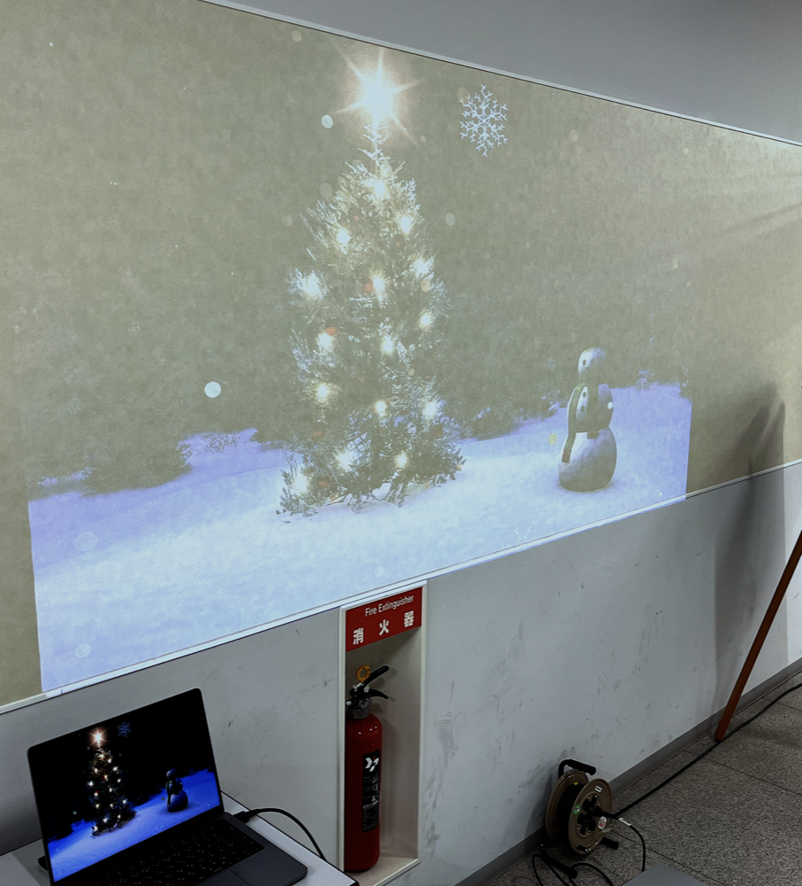
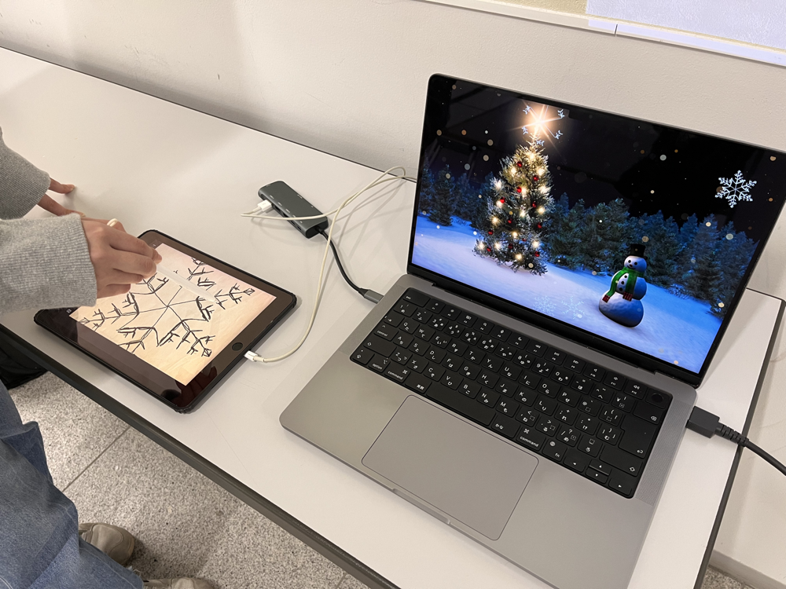

SnowFlake

YouTubeで動画を開くTechnology
- Processing
- iPad
- プロジェクター
参加者がiPad上で雪の結晶を描くと、プロジェクターで映し出された風景にその雪の結晶が追加され、雪が降り始める。描かれた雪の結晶は、落下するにつれて徐々に溶け、完全に溶けると同じ形の雪の結晶が再び上から降りてくる。
自然界の雪の結晶は非常に多様で美しい形状を持っている。同様に、参加者が描く雪の結晶もそれぞれ独自の形や模様を持ち、他の誰とも同じではないという特徴を備えている。
この作品は、参加者と観客が情報技術に触れるきっかけとなり、参加者の創造が身近で親しみやすい形で表現されることで、情報技術と参加者や観客との間に新たな共感を生み出すことを意図して制作された。
本作品は、明星大学のオープンキャンパスにて展示された。
